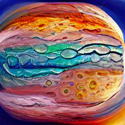

College Resume:Haniya Sajjad

Haniya Sajjad
Present Position: Studing at FAST-NUCES Islamabad
Objectives:Aim to become a professional Data Scientist
ExtraCurriculars:
~Numerous Model United Nations. Appointed as the head delegate for the HeadstartMUN
~Active participant of WWF, taking part in their clean up drives and scavenger hunts to protect wildlife
~Student Council: Elected the Vice house Captain in Grade 9 and appointed as class Prefect in grade 10
~Enrolled in Robotics course mentored by students from NUST
~Participated in the STEM festival: Showcased a working robot & named runner-up
~Orgainized a Fun Gala: Co-head of the planning committee, leading every aspect of the event
~Hosted school based events: Quiz/Competitions , official/unofficial ceremonies
~Partnered with President of socials club to lead the donation drive & present it to Aukuwat foundation
Academics:
O-level Grades: 7A*'s & 1A
A-level Grades: 2A*'s & 1A